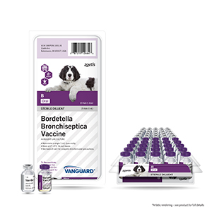
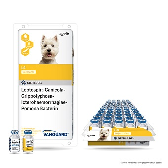
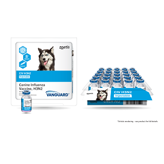
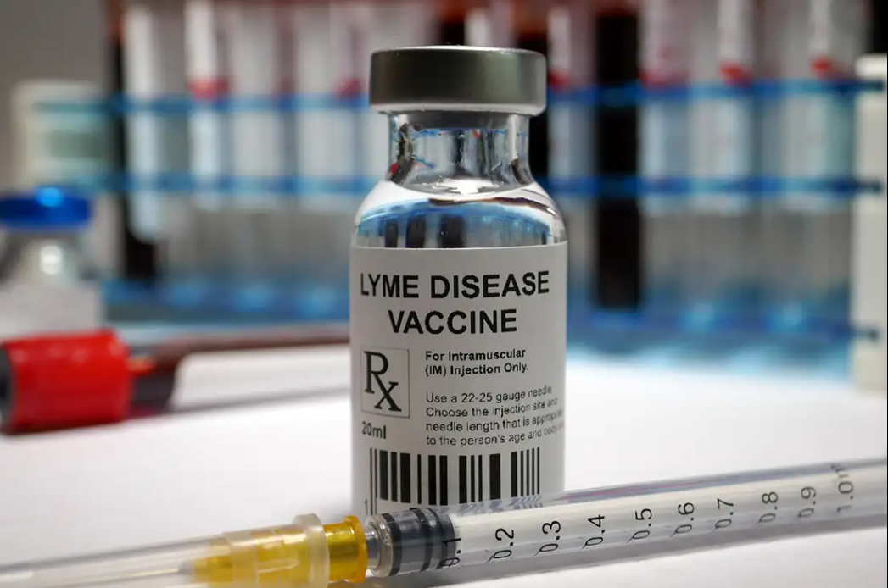
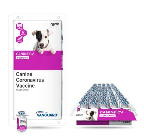

ESSENTIAL VACCINES FOR YOUR SHIH TZU
NON-CORE VACCINES (Given Based on Risks Factors)
NO.1
BORDETELLA VACCINE

Bordetella Bronchiseptica (Bb) Vaccination for Dogs
Bordetella bronchiseptica (Bb) is a common cause of respiratory disease in dogs, often linked to kennel cough. Vaccination plays a crucial role in reducing infection risks and minimizing symptoms.
Types of Bb Vaccines:
Studies show that these vaccines stimulate both mucosal and systemic immune responses, helping to limit the growth of Bb in dogs. However, some research on Bb vaccine effectiveness has limitations due to experimental design flaws. Additionally, questions remain about how long vaccine-induced immunity lasts and the role of natural exposure in maintaining herd immunity. While vaccination is an effective tool, continued research is needed to improve protection strategies against Bb infections in dogs.

NO.2
LEPTOSPIROSIS VACCINE

Canine Distemper Vaccination: Essential Information
Canine distemper is a highly contagious viral disease affecting dogs' respiratory, gastrointestinal, and nervous systems. Vaccination is crucial for prevention.
Canine Leptospirosis and Vaccination
Leptospirosis is a widespread bacterial infection affecting both humans and animals, including dogs. It is caused by Leptospira bacteria and can lead to serious health issues such as liver, kidney, and lung disease. Since it is a zoonotic disease, infected dogs pose a risk to human health.
Canine Leptospirosis Vaccination:
Due to the risks associated with leptospirosis, regular vaccination and proper monitoring of new strains remain essential for disease prevention in dogs.
NO.3
CANINE INFLUENZA VACCINE

Canine Influenza Vaccines: An Overview
Canine influenza is a contagious respiratory disease in dogs, primarily caused by two subtypes of canine influenza viruses (CIV): H3N8 and H3N2. To combat these viruses, various vaccination strategies have been developed and studied.
Inactivated Influenza Vaccines (IIVs):
Currently, the most widely available vaccines for CIV are inactivated influenza vaccines. These vaccines contain virus particles that have been killed, eliminating the risk of causing disease while still eliciting an immune response. However, studies have shown that while IIVs can induce immunity, they may not always provide complete protection against infection.
Live-Attenuated Influenza Vaccines (LAIVs):
Research has been conducted to develop live-attenuated influenza vaccines for CIV, particularly for the H3N2 subtype. LAIVs use live viruses that have been weakened so they cannot cause serious illness but can still stimulate a robust immune response. Studies have demonstrated that LAIVs can induce strong immunity and offer protection against CIV challenges in dogs.
NO.4
LYME DISEASES VACCINE

Canine Lyme Disease Vaccines: An Overview
Lyme disease in dogs is caused by the spirochete Borreliella burgdorferi, transmitted through tick bites. Vaccination is a key preventive measure, and recent advancements have led to the development of more effective vaccines.
VANGUARD crLyme Vaccine:
One notable advancement is the VANGUARD®crLyme vaccine by Zoetis. This vaccine is a multivalent subunit formulation that includes a modified outer surface protein A (OspA) and a custom-de gned outer surface protein C (OspC). These proteins are crucial for the bacterium's infectivity, and targeting them enhances the vaccine's effectiveness. Studies have demonstrated that VANGUARD®crLyme is both immunogenic and efficacious in preventing Lyme disease in dogs.
Comparative Analysis of Antibody Responses:
Research comparing various canine Lyme disease vaccines has shown that formulations targeting both OspA and OspC elicit robust immune responses. Specifically, vaccines incorporating chimeric epitopes of OspC, such as Ch14, have been effective in producing a broad and cross-reactive antibody response.
Field Safety Studies:
Field safety evaluations of VANGUARD®crLyme have confirmed its safety profile in canine populations. These studies are essential to ensure that the vaccine does not induce adverse effects and is well-tolerated among diverse dog breeds and ages.
Conclusion:
Advancements in canine Lyme disease vaccines, particularly those targeting multiple outer surface proteins like OspA and OspC, have improved the prevention strategies against Borreliella burgdorferi infection. Vaccines such as VANGUARD®crLyme offer enhanced protection, contributing significantly to canine health in areas where Lyme disease is prevalent.
NO.5
CANINE CORONAVIRUS VACCINE

Canine Coronavirus (CCoV) Vaccines: Insights and Efficacy
Canine coronavirus (CCoV) is an enteric pathogen causing mild gastroenteritis in dogs. To combat this, various vaccines have been developed, including modified-live (ML) vaccines. A study evaluated the safety and efficacy of an ML CCoV vaccine strain 257/98-3c in 14 seronegative dogs. Four dogs received the vaccine at ten times the standard dose via intramuscular or oronasal routes, with no adverse effects observed over 28 days. The remaining ten dogs were divided into vaccinated and control groups, with vaccinated dogs showing significant antibody responses and protection against clinical signs upon challenge with a virulent CCoV strain.
Key Insights: